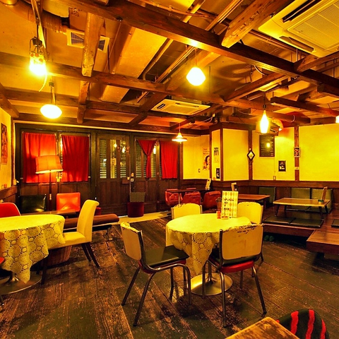
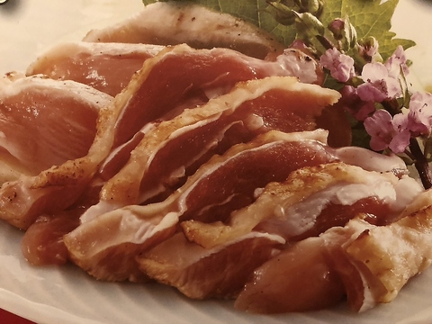
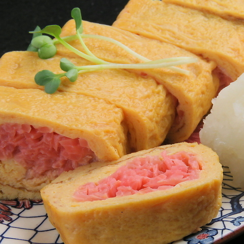
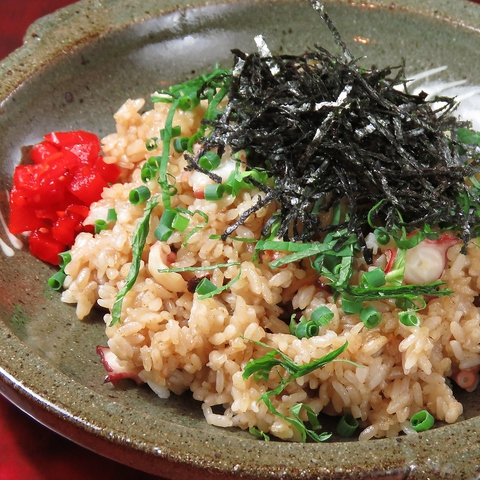
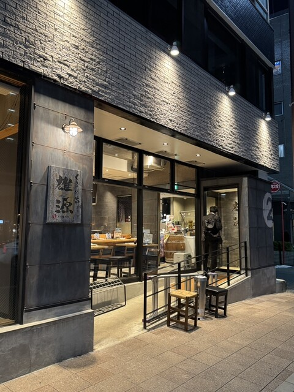
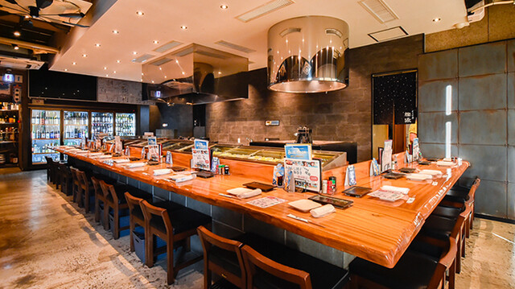
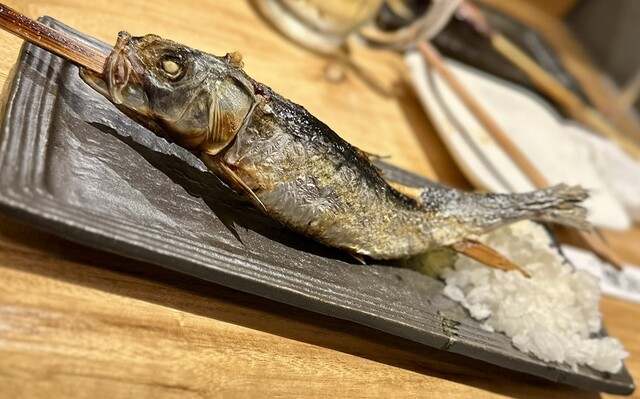
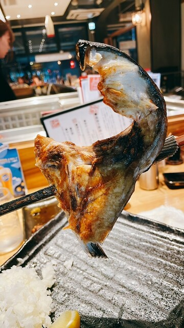

トワイライト食堂




雄源
久留米エリアの親子３世代で使える焼鳥店【くるめ串 雄源】。
北海道より直送の鮮魚を使用した「原始焼き」をはじめ、全５０種の
「野菜巻串」や豊富な種類の一品料理、１００種のワインや
幅広い日本酒も取り揃えている長時間いても楽しめるお店。
リンクはこちら
北海道より直送の鮮魚を使用した「原始焼き」をはじめ、全５０種の
「野菜巻串」や豊富な種類の一品料理、１００種のワインや
幅広い日本酒も取り揃えている長時間いても楽しめるお店。
リンクはこちら



